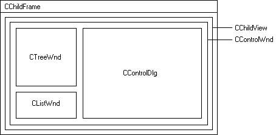

VC界面UI开发
本文说明了一组可以在MFC中动态创建UI控件的缓存池管理类，该类继承自CWnd类，可减少在复杂应用中的GDI资源占用。
复杂的UI应用场景
远程设备的网络管理应用程序：每个设备分别有一组实时读写的配置属性。可以使用多文档的MDI框架，然后TAB选项卡对属性进行逻辑分组与选择。
如果设备参数多达数十或数百，一个TAB包含20个参数，则需要10个TAB或对话框，再加上每个参数的说明性文本TAB，那么就需要使用超过400个UI控件；如果使用了ActiveX控件(如WebBrowser)或其他第三方用户控件，那么它们耗费的GDI资源会更高。
类似VS2005中的“选项（Options）”对话框：左侧为树形，右边为一组UI控件。使用树视图进行逻辑分组与选择。
CWnd缓存池
为减少系统资源占用，可以只实例化一次同类控件并缓存。可以在缓存池或cache中存储隐藏控件，以便它们可以在转换到一个不同TAB时被复用。这允许我们通过TAB选择复用UI控件实例。举个例子，如果一个TAB使用了一个CButton，而另一个TAB也使用一个CButton，那么只需要创建一个CButton的实例并使用相同的UI实例。
可以只使用一个对话框或属性页，通过TAB或树形等进行分组，决定某一组UI控件被隐藏或显示。UI控件也被按组保存在缓存池中。这样可以成倍减少UI控件的显示。
为了实现复用机制，首先通过定义一个CWndFreePool类，用来保存和标记空闲可利用的CWnd实例。池中引用的每个CWnd配以一个字符串标识与UI控件的类型相应的CWnd。比如，"CWndButton"实际上是一个CButton实例，（以BS_PUSHBUTTON样式创建的）。缓存池也可以引用ActiveX控件，因为Visual Studio为继承于CWnd的ActiveX控件生成MFC包装类。CWndFreePool类的public接口如下所示。
// CWndFreePool缓存到已创建而尚未显示的（隐藏）的CWnds控件。
//该缓存池管理池中的CWnds控件并拥有所有权，最后在其析构体删除它们。
// CWndFreePool keeps references to CWnds which have been
// created but are unused (hidden). The pool maintains ownership
// of the CWnds which are still in the pool and deletes them in
// its destructor.
class CWndFreePool
{
public:// Constructor / destructor.CWndFreePool();//构造器/析构器
~CWndFreePool();// Public methods.
CWnd* GetWnd(constCString& strType);
void AddWnd(const CString& strType, CWnd* pWnd);
};控件类
为了复用一个UI控件实例，控件隐藏/显示时被存入/取出缓存池时都需要保存一些公用的控件状态，所以可以在MFC控件类(如CButton和CSliderCtrl)之上简单再封装一组CWndXXX控件类。这层类的基类是CWndControl并且它的public接口如下所示。
// CWndControl基类（抽象）
class CWndControl : public IWndEventHandler
{
public:
//构造器/析构器
CWndControl();
virtual ~CWndControl();
//类型字符串
const CString& GetTypeName() const;
//生成目标名称标识
const CString& GetName() const;
voidSetName(const CString& name);
//可见性
bool IsVisible() const;
void SetVisible(bool visible);
// Enabled状态
bool IsEnabled() const;
void SetEnabled(bool enabled);
// Read-only状态
bool IsReadOnly() const;
void SetReadOnly(bool readOnly);
//位置
const CPoint& GetLocation() const;
voidSetLocation(const CPoint& location);
// 尺寸大小
const CSize& GetSize() const;
voidSetSize(const CSize& size);
CRect GetRect() const;
// CWnd资源ID
UINT GetResourceId() const;
// CWnd装置
voidAttachWnd(CWnd* pWnd);
voidDetachWnd();
CWnd* GetAttachWnd();
// CFont装置
void AttachFont(CFont* pFont);
//事件
void EnableEvents(bool enable);
void SuspendEvents();
void RestoreEvents();
void AddEventHandler(IWndEventHandler* pEventHandler);
void RemoveEventHandler(IWndEventHandler* pEventHandler);
void RemoveAllEventHandlers();
//连接到其它CWndControl
void AddLinkedControl(CWndControl* pControl);
void RemoveLinkedControl(CWndControl* pControl);
void RemoveAllLinkedControls();
//纯虚方法
virtualbool CreateWnd(CWnd* pParentWnd, UINT resourceId) = 0;
virtualvoid UpdateWnd() = 0;
virtual BOOL OnCmdMsg(UINT nID, int nCode, void* pExtra,
AFX_CMDHANDLERINFO* pHandlerInfo) = 0;
// IWndEventHandler覆写
virtualvoid HandleWndEvent(const CWndEvent& ev);
};可以只使用new操作符通过应用程序代码创建继承于CWndControl类的实例。然而，一个CWndFactory类已被提供来允许为CWndControl实例的创建而给定一个类型字符串。该工厂类主要被设计用来允许从XML清单中动态创建控件。
CWnd 容器
实际的复用逻辑通过CWndContainer类实现。该类是动态UI布局的核心因为它管理了缓存池的更新、使用工厂类和事件调度。CWndContainer可以被认为是一个附着在CDialog以添加动态UI支持的帮助类。例如，在一个CDialog类，只需要创建一个CWndContainer实例并将其附着到this指针。一旦该容器被附加到对话框，CWndControl实例便可以被创建并同时添加到容器（如下所示）。
当一个CWndControl实例被添加，该容器使用其内部的缓存池来尝试获得一个已有的有着适当类型的CWnd。如果找到一个，CWnd从池中被移出，显示，并且CWndControl的属性此时就被应用到这个CWnd实例。另一方面，如果在此池中没有找到适合的CWnd，容器将用工厂类创建一个新的CWnd实例。
当一个CWndControl实例从容器中被移出时，与它关联的CWnd被剥离，隐藏，并返回到缓存池以供复用。CWndContainer类的public接口如下所示以供参考。
// CWndContainer 管理一个CWndControl 实例的集合并且
// 被设计来附着到一个CDialog比如CControlDlg。
// 当一个控件被添加到这个容器，缓存池被用来获得一个适当的Cwnd
// 以附着到这个控件。
// 如果没有可用的（CWnd），该容器将通过使用工厂类为之
//创建一个新的CWnd。当一个控件从容器中被移出时，
//它的CWnd被剥离并添加到缓存池，以供稍后复用。
class CWndContainer
{
public:
CWndContainer();
~CWndContainer();
// 附着到 CDialog.
void AttachWnd(CWnd* pWnd);
void DetachWnd();
// 为控件的CWnd们设置资源ID范围
void SetResourceIdRange(UINT minResourceId, UINT maxResourceId);
// 控件管理
void AddControl(CWndControl* pControl);
void AddControls(const std::list& controlList);
void RemoveControl(CWndControl* pControl);
void RemoveAllControls();
//寻找控件
CWndControl* GetControl(const CString& controlName);
CWndControl* GetControl(UINT resourceId);
voidGetControls(std::list& controlList) const;
//消息处理
BOOL OnCmdMsg(UINT nID, int nCode, void* pExtra,
AFX_CMDHANDLERINFO* pHandlerInfo);
};事件处理
当MFC控件在一个对话框中被动态创建（比如，通过使用new然后调用Create()方法，这些控件发出的消息可以通过改写CDialog类中用于MFC消息路由转发的OnCmdMsg()虚方法来截取。这就是为什么CWndContainer类也定义一个OnCmdMsg()方法。在任何一个附着了CWndContainer实例的CDialog，你可以改写这个对话框的OnCmdMsg()方法并简单转交这个调用给CWndContainer的OnCmdMsg()实现。容器的实现将派发这个消息给存储于容器中的适当的CWndControl。这个CWndControl将发送一个CWndEvent通知到它的每个事件处理程序。
对于任何CWndControl实例，你可以添加一个或更多的事件处理程序来接受通过其相应的MFC控件发送的事件。如下所示，事件处理程序是实现IWndEventHandler接口的目标。
// IWndEventHandler 接口.
class IWndEventHandler
{
public:
virtualvoid HandleWndEvent(const CWndEvent& ev) = 0;
}; 事件的属性通过CWndEvent类被封装：
// CWndEvent 类.
class CWndEvent
{
public:
//构造器/析构器。
CWndEvent(CWndControl* sender, const CString& text);
~CWndEvent();
//公共方法。
CWndControl* GetSender() const;
CStringGetText() const;
voidAddProperty(const CString& name, const CString& value);
boolGetProperty(const CString& name, CString& value) const;
}; 使用动态UI类
下面的代码示例显示了如何为一个CDialog类添加动态UI支持。在此例中，我们简单添加了一个"Hello World!"按钮到一个对话框上。当这个按钮被按下，一个消息框就显示出来，如下面的截图所示：
相关头文件如下：
//文件名：MyDlg.h
...
#include "WndEvent.h"
//转交声明
class CWndContainer;
class CWndButton;
// CMyDlg 类.
class CMyDlg : public CDialog, public IWndEventHandler
{
DECLARE_DYNAMIC(CMyDlg)
public:
CMyDlg(CWnd* pParent = NULL);
virtual ~CMyDlg();
// IWndEventHandler 改写.
virtualvoid HandleWndEvent(const CWndEvent& ev);
...
protected:
virtual BOOL OnInitDialog();
virtual BOOL OnCmdMsg(UINT nID, int nCode, void* pExtra,
AFX_CMDHANDLERINFO* pHandlerInfo);
...
private:
CWndContainer* m_container;
CWndButton*m_button;
...
};
...源文件如下：
// Filename: MyDlg.cpp
#include "stdafx.h"
#include "MyDlg.h"
#include "WndContainer.h"
#include "WndControl.h"
...
CMyDlg::CMyDlg(CWnd* pParent /*=NULL*/)
: CDialog(CMyDlg::IDD, pParent)
{
m_button = NULL;
//创建一个容器实例并将其附着到对话框
m_container = new CWndContainer;
m_container->AttachWnd(this);
}
CMyDlg::~CMyDlg()
{
//从对话框中剥离容器并删除之
m_container->DetachWnd();
delete m_container;
//删除按钮
delete m_button;
}
BOOL CMyDlg::OnInitDialog()
{
CDialog::OnInitDialog();
//创建一个CWndButton并设置其属性
m_button = new CWndButton;
m_button->SetName(_T("Button1"));
m_button->SetText(_T("Hello World!"));
m_button->SetLocation(CPoint(10,10));
m_button->SetSize(CSize(100,24));
//给按钮附着一个事件处理程序
m_button->AddEventHandler(this);
//给容器添加按钮
m_container->AddControl(m_button);
return TRUE;// 返回TRUE除非你设置焦点到一个控件
// 异常：OCX属性页应该返回FALSE
}
BOOL CMyDlg::OnCmdMsg(UINT nID, int nCode, void* pExtra, AFX_CMDHANDLERINFO* pHandlerInfo)
{
//让容器处理此消息
if ( m_container != NULL )
{
BOOL isHandled = m_container->OnCmdMsg(nID, nCode, pExtra, pHandlerInfo);
if ( isHandled )
return TRUE;
}
return CDialog::OnCmdMsg(nID, nCode, pExtra, pHandlerInfo);
}
void CMyDlg::HandleWndEvent(const CWndEvent& ev)
{
if ( ev.GetSender()->GetName() == _T("Button1") )
{
MessageBox(ev.GetText(), _T("CMyDlg"));
}
}
...控件皮肤层（Surface Layer）
上述对话框示例简单展示了如何动态地创建一个UI。然而，为了证明资源使用方面从缓存池机制获得的好处，我们需要一个在运行时从容器添加或移除CWndControl实例的方法。最好的说明就是使用一个控件被分成多个分组（但是一次只有一组控件可以被显示）的场景，使用上述分组和选择的机制（比如使用一个树视图或一个TAB控件）。最后，我添加了另一个层的类：它实现包含可以通过XML被定义的内容的一个“控件窗体”。我用这一组类的主要目的是展示给一个非常特别的UI场景所带来的资源节约。下面简要描述一下控件皮肤类：
CTreeWnd: 一个树控件的CWnd包装类。用来实现在控件窗体中的树视图；
CListWnd: 一个列表控件的CWnd包装类。用来在控件窗体中实现事件区域；
CControlDlg: 这就是使用CWndContainer实例的对话框类。它就是CWnd控件被创建、显示或隐藏所在的实际控件皮肤；
CMarkup: 来自Ben Bryant文章的XML 析构器类。这是一个易用的没有额外依赖的类，它只包括两个源文件（release 6.5 Lite version)；
CControlGroup: 代表一个“控件组”，它与文件系统中的一个文件夹相似。一个控件组可以包含其它组，并且也可能包含控件（这里的控件就好像文件系统中的文件）；
CControlXml: 这是一个使用CMarkup来解析XML文件和生成控件组和控件实例的XML引擎；
ControlWnd: 一个继承于CWnd的类，它实现一个包括一个左手边上的树视图、在右边的内容控件和一个小的来展示事件处理的事件窗体。这是TestFreePool 演示应用程序用到的顶层类。
TestFreePool应用程序
该演示项目（TestFreePool）是一个MDI应用程序，我是用Visual Studio开始生成的。该应用程序只允许你打开为MDI子窗体而定义UI内容的XML文件。在每个子窗体内部，你可以访问一个包含选项："Show CWnd Count"的上下文菜单。这个功能计算窗体在CChildView实例层次上实际使用的CWnd对象（当做一个资源使用的粗略估计）。CChildView由Visual Studio生成并且它是以控件皮肤层整合MDI应用程序代码的基本点。下面的截屏显示了演示项目是如何构成的。
为了在运行中演示这些类，我已经在此提供了一个MDI应用示例，它只是让你来打开XML文件。每个XML文件为单个MDI子窗体定义了布局和UI控件属性。尽管代码是用VC6写的，示例项目也可以被转换为VS 2003 和VS 2005项目。本文提供下载的zip文件包括TestFreePool应用程序的一个release版本。如果你希望自己创建演示项目，请注意由于许可限制的原因我已经从zip文件中剔除了两个源文件：Markup.h和Markup.cpp。请首先从CMarkup文章下载该源代码，并在使用Visual Studio生成解决方案之前将Markup.h和Markup.cpp文件置入 TestFreePool 项目文件夹中去。如果你使用VS 2005来转换并生成演示项目，你可能会因为Markup.cpp的 Line 725而碰到一个编译器错误C2440。为了解决之，你可以只添加一个适当的强制类型转换(_TCHAR *)（译注：即改为if ( (pFound=(_TCHAR *)_tcschr(pFind,cSource)) != NULL ) 就可）以避免这个错误。
下面的图展示了在演示应用程序中的每个MDI子窗体的窗体继承图表。

XML 文件
在TestFreePool文件夹中，有三个可以由演示应用程序打开的示例XML文件。下表描述了每个文件并且也给出了一个关于使用缓存池机制获得的资源节约指标（基于CWnd统计总数）。XML格式选择是相当武断的－它主要允许你定义每组可以包含零个或更多子组和零或更多控件的一个控件组层次。
文件名 |
简介 |
使用缓存池的最大CWnd对象数 |
不使用缓存池的大概CWnd对象数量 |
Example1.xml |
Displays each of the supported UI control types. |
30 |
41 |
Example2.xml |
Displays 12 control groups, each containing 10 labels and 10 buttons. |
27 |
259 |
Example3.xml |
Displays 3 pages from the VS 2005 Options dialog. |
30 |
48 |
注意为Example1.xml计算的CWnd最大数可能会随着你系统上配置的Internet Explorer而变化（因为其中一个支持控件是Microsoft WebBrowser2 ActiveX 控件）。下面是演示应用程序中载入Example2.xml文件时的截图。
总结
本文的目的是演示如何动态创建UI同时在特定场景下最小化资源使用。开发出的代码是为了阐明这个概念而非生产使用，等等。比如，现在只有一些有限的控件和属性被支持，并且事件处理机制是非常简单的。加入XML支持是一个方便的说明和测试的方法，但不是本文要表达的重点。你可以为更多的MFC控件或者甚至为自定义控件添加支持。在演示项目文件夹中有一个文本文件，它概述了添加一个新的控件支持的步骤。
单对话框版本源码
CWnd自绘控件的一般方法
构建步骤:
1.从CWnd派生一个新类比如CMyCtrl
2.重载Create函数,传参更改成自己需要的数据,注册并创建子类化窗口
3.在OnPaint()里随心所欲画自己要的东西
4.响应鼠标消息,得到信息后向父窗口发送消息
调用步骤
1.头文件包含新控件的头文件
2.用新控件类定义一个变量
3.在初始话的地方,给新控件变量创建一个实例
4.创建消息响应函数接收新控件传来的消息
图片不好上,所以只能这样了
新手可能不太好理解
那么可以这样
你们把我的上面的每一步提炼一下,前面加个"怎么",然后百度
一个步骤一个步骤学会之后,就一劳永逸了
参见
Building a Dynamic UI using a CWnd Free Pool - CodeProject，使用一个CWnd缓存池创建一个动态用户界面
Developing Applications with a User-Customizable GUI Layout：一个系统的MFC基于XML生成各原生界面的XMLGUI框架
，源码和文档已整理到本地源码。另外有空可看一个类似的SDXMLGUI Utility - JTAG Emulators - Spectrum Digital的文档SDXMLGUI DocumentationUsing Skins Without MFC - CodeProject：介绍一个简单的透明窗体实现
Using Dialog Templates to create an InputBox() in C++ - CodeProject
自绘按钮的实现(VC6)
自绘按钮补遗:本文是对《自绘按钮的实现》一文的补充，介绍了非规则按钮的实现，并对原CXPButton类进行了完善。
An Example of Overlapping Controls (CRgnedButton) - CodeGuru